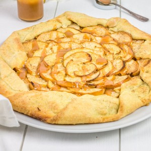

Tarte aux pommes et caramel beurre salé

Aujourd’hui je suis super heureuse de partager avec vous ma nouvelle recette (comme à chaque fois me direz vous^^) car cette tarte a fait l’unanimité chez nous! Bref, vous l’aurez compris, il s’agit de ma tarte aux pommes (façon tarte rustique) et c’est une petite tuerie!!
C’est vrai que c’est fou comme je suis heureuse à chaque fois que je viens écrire une recette ici. L’idée de savoir que je peux vous donner envie de faire une recette, que vous puissiez l’aimer à votre tour autant que moi j’ai pu l’apprécier me fait vraiment très plaisir!! J’aimerais pouvoir vous faire directement goûter, ça serait plus simple et ça me ferait tout autant plaisir mais bon ce n’est pas vraiment possible ;-)!! Alors voilà, je suis de retour avec une tarte rustique et une grande classique car il s’agit d’une tarte rustique aux pommes!!! Quoi de plus simple!Mais surtout quoi de meilleur! Il n’y avait que deux recettes de tartes aux pommes sur le blog jusqu’à présent (vous vous souvenez? la toute première c’était celle en forme de bouquet de roses!) et c’est normal car c’est vraiment « LA » tarte qui m’accompagne les dimanches après-midi alors il devrait même y en avoir beaucoup plus. Une fois n’est pas coutume je vous la présente sous la forme d’une tarte rustique et je pense que je vais arrêter de parler de mon amour pour les tartes rustiques car ce ne serait que de la répétition encore et encore… (mais c’est tellement plus beau, et tellement bon comme ça!!!!) Vous verrez dans la recette que ma gourmandise ne s’est pas arrêtée aux pommes car j’ai ajouté du caramel beurre salé au moment de servir sur le dessus de la tarte et mmmmh que c’était bon!! Le caramel beurre salé est aussi fait maison et vous trouverez ma recette (absolument inratable ICI)!! Tout ça pour vous dire que si vous aussi vous avez envie de quelque chose de simple (de beau :-)) et surtout de bon alors foncez (et si ce n’est pas pour vous mais pour les autres que vous le faites alors on ne pourra d’ailleurs que vous remercier)!!!!!
Ingrédients
- Farine - 250g
- Eau froide - 120ml
- Beurre doux - 125g
- Sucre - 20g
- Cassonade - 20g
- Pommes - 4-5 selon la taille de vos pommes
- Amande en poudre - 60g
- Cassonade - 50g
- Citron - 1càs
- Beurre - 5g
- Cassonade - 1càs
- Caramel beurre salé
- Cannelle - (facultatif)
Instructions
- Dans un saladier, mélanger la farine et le sucre blanc et la cassonade Vous pouvez choisir de ne mettre que de la cassonade ou que du sucre blanc
- Ajouter le beurre mou coupé en morceaux
- Bien l'incorporer bien au mélange farine-sucre (vous allez obtenir une pâte "sableuse" c'est normal)
- Verser l'eau petit à petit Attention la quantité d'eau peut varier selon les ingrédients utilisés alors verser bien petit à petit. Il faut une pâte non collante et homogène
- Si la pâte est trop collante rajouter un peu de farine
- Filmer la pâte et la placer au frais pendant 1 heure (ou plus si vous pouvez)
- Au bout d'une heure abaissez la pâte sur du papier sulfurisé de manière à ce qu'elle fasse environ 30cm de diamètre Farinez régulièrement sous la pâte pour qu'elle ne colle pas à votre plan de travail
- Replacez-la au frais le temps de la préparation des autres ingrédients
- Préchauffer le four à 180°
- Couper les pommes en quartiers
- Épépinez-les et recouper les quartiers en très fines tranches
- Si vous avez vraiment peur de ne pas aller assez vite et que vos pommes noircissent vous pouvez les mettre dans un grand saladier d'eau contenant 1 càc de jus de citron.
- Dans un bol, mélanger les amandes en poudres, la cassonade et le citron (si vous aimez la cannelle vous pouvez en ajouter 1/2 ou 1 càc)
- Sortir la pâte du frigo
- Étalez le mélange poudre d'amandes/cassonade/citron sur la pâte en laissant environ 3cm sur les bords
- Placer les quartiers de pommes sur le mélange poudre d'amande/cassonade/citron
- Ramenez les bords de la pâte sur les pommes
- Saupoudrez la tarte de cassonade, et déposer des petits morceaux de beurre par-ci par-là (vous pouvez également saupoudrer de cannelle et d'amandes effilées)
- Enfournez à 180° pendant 40-45 minutes ( surveillez bien la cuisson car le temps de cuisson varie selon les fours!!) La pâte doit être bien dorée
- Déguster tiède ou froide et si vous êtes gourmands, ajoutez du caramel au beurre salé c'est divin!!
Les tips de la communauté
Recette validée à 100% par les testeurs. Les pommes Golden conviennent bien, et le caramel beurre salé maison fait la différence. Succès garanti même auprès des grincheux des tartes traditionnelles.
Astuces
- Les pommes Golden fonctionnent très bien malgré leur sucre élevé
- Utiliser du caramel beurre salé maison pour bien meilleur résultat
- C'est une excellente introduction aux tartes rustiques qui séduisent même les sceptiques
Variantes suggérées
- Utiliser des pommes Golden à la place des pommes recommandées
- Remplacer partiellement le beurre de pâte par de la margarine